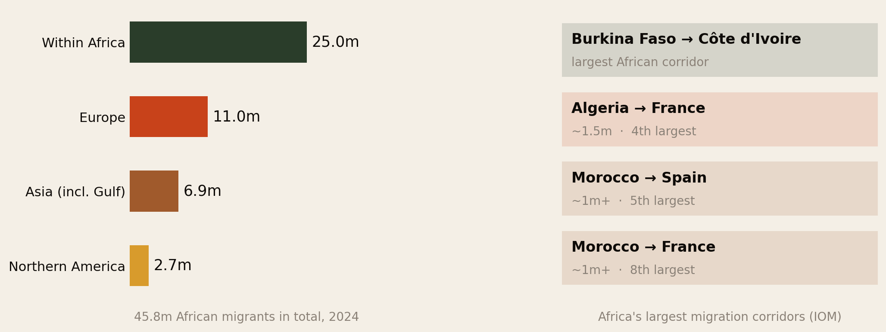
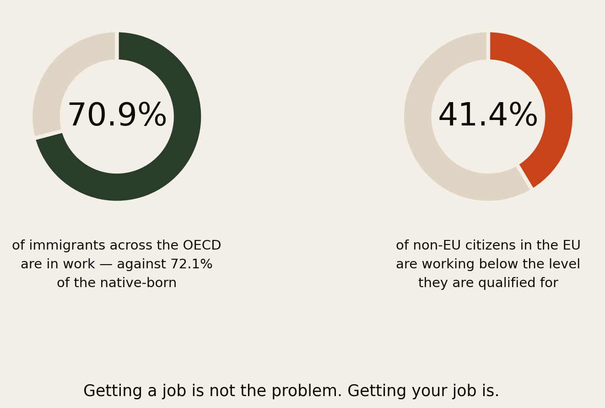
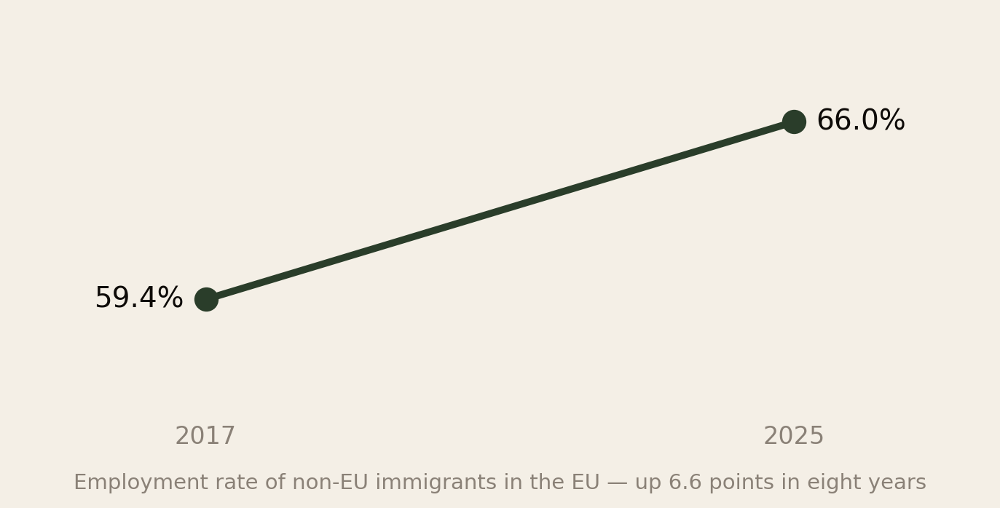
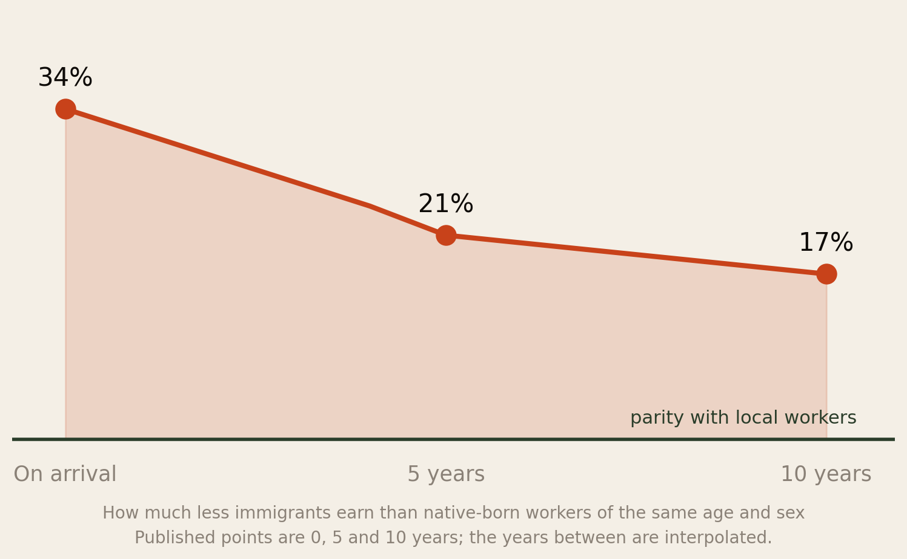
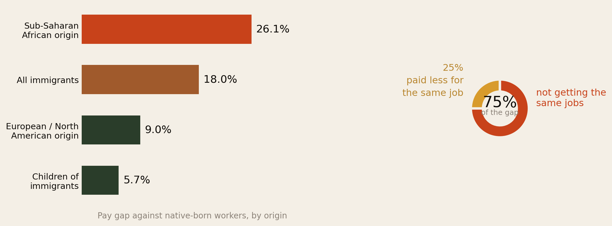
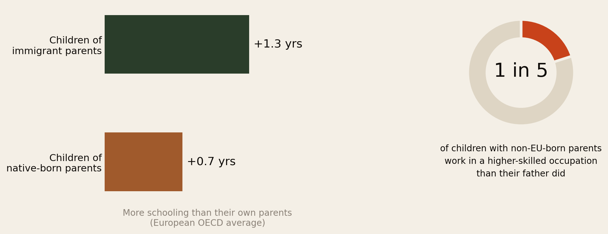
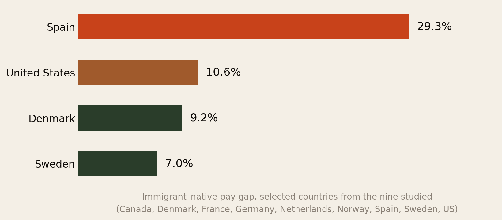
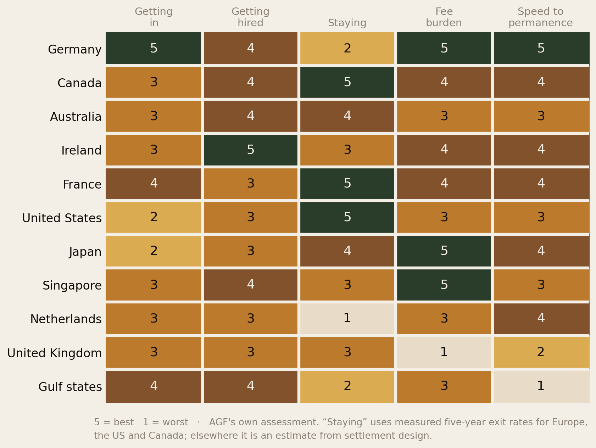

How Long Until It Was Worth It?
Getting a job abroad is easy. Getting your job is not. Four rungs, a measured timeline for each, and an honest read on which countries actually let an African arrival climb them.
Section 01The Short Version
“Will I succeed abroad?” is the question underneath every migration decision, and it is almost never answered with numbers. It can be. The research measures four separate things, and they have very different answers.
- Getting a job is easy. Across the OECD, 70.9% of immigrants are employed against 72.1% of the native-born — and immigrants actually participate in the labour force at a slightly higher rate, 77% against 76% (OECD International Migration Outlook 2025).
- Getting the job you trained for is hard. 41.4% of non-EU citizens in the EU work below the level they are qualified for — the highest rate of any group.
- Getting paid like a local is harder still, and never finishes. Immigrants earn 34% less than native-born workers of the same age and sex on arrival, 21% less at five years, 17% less at ten — and there the curve flattens.
- The biggest return lands on your children, but it is not automatic. Children of immigrants gain 1.3 more years of schooling than their own parents against 0.7 for children of the native-born — yet only 1 in 5 of those with non-EU-born parents ends up in a higher-skilled occupation than their father held.
- And it is measurably harder for Africans than for other migrants. Workers of sub-Saharan African origin face a 26.1% pay gap against native-born workers — against 9.0% for European or North American arrivals in the same countries. Three-quarters of that gap is not getting the same jobs; only a quarter is being paid less for the same job.
- Which country you choose changes the answer more than anything you personally do. Five-year exit rates run from 15% in the United States to 75% in the Netherlands; the government fee bill for a family of four runs from $510 to $122,000; time to citizenship from 3 years to 11.
Succeeding abroad is not one achievement. It is four, they take different amounts of time, and most people only plan for the first one.
Section 02The Four Rungs
Here is the whole report in one image.
![Four rungs of succeeding abroad. Rung 1, get a job: EASY — 70.9 percent of immigrants across the OECD are employed against 72.1 percent of the native-born. Rung 2, get a job that fits your skills: HARD — 41.4 percent of non-EU citizens in the EU work below the level they are qualified for. Rung 3, get paid like a local: VERY HARD — 34 percent less on arrival, 21 percent at five years, 17 percent at ten, the gap never closes. Rung 4, your children do better: LIKELY — children of immigrants out-educate their parents everywhere but only 1 in 5 reach a higher-skilled occupation than their father.](img/rungs.png)
Most migration advice, and almost all recruitment marketing, is about rung one. That is the rung that is already easy. The difficulty is concentrated in rungs two and three, and the payoff is concentrated in rung four — which arrives twenty years after the decision that caused it.
Section 03Where Africans Actually Go
Before the rungs, the map. There were 45.8 million international migrants from Africa by mid-2024 — and the single biggest fact about them is that most never left the continent.

The largest African migration corridor on earth is Burkina Faso to Côte d’Ivoire — not any route to Europe. Free movement under ECOWAS, geographic proximity and long-standing labour ties do the work. The biggest corridors leaving the continent are North African and post-colonial: Algeria→France at about 1.5 million (fourth largest), Morocco→Spain and Morocco→France at over a million each.
The largest African countries of origin in 2024 were Egypt, Sudan and Morocco, ahead of South Sudan, the DRC, Nigeria, Burkina Faso, Somalia, Algeria and Zimbabwe — a list dominated by North Africa, conflict-affected states and the Sahel rather than by the Anglophone West and East African countries that dominate diaspora conversation in London and Houston.
If you are reading this in Europe or North America, you are in the minority of a minority: outside the continent at all, and outside the largest corridors within it.
One destination deserves separate mention because it is systematically under-discussed. Saudi Arabia’s 2022 census recorded 715,000 nationals of sub-Saharan African countries, 5.3% of the Kingdom’s foreign population — and the Gulf as a whole holds a large share of the 6.9 million Africans in Asia. As The Visa Treadmill found, those states offer no realistic citizenship pathway at any price. For millions of Africans abroad, rungs three and four of this report are not available at all.
Section 04Rung 1 — A Job

The employment gap between immigrants and the native-born across the OECD is 1.2 percentage points. That is very close to nothing. And on labour force participation — working or actively looking — immigrants come out ahead: 77% against 76%.
This deserves stating plainly because it contradicts the political narrative in most destination countries. Immigrants are not failing to work. They work at essentially the same rate as everybody else, and they look for work harder.
There is also genuine progress here. In the EU, the employment rate of non-EU immigrants rose 6.6 points in eight years, from 59.4% in 2017 to 66.0% in 2025.

Verdict on rung one: easy, and getting easier. If your fear about moving is that you will not find work, the data says that is the wrong thing to be afraid of.
Section 05Rung 2 — The Right Job
Here is where it breaks.
41.4% of non-EU citizens in the EU are over-qualified for the job they hold. Highest of any group, and highest of all among non-EU-born women. It has improved slowly — from 45.9% in 2014 to 39.6% in 2024 for the non-EU-born — but it remains the defining feature of migrant employment in Europe.
Now put that beside who Africans abroad actually are. As The Diaspora, Counted documented, 46% of sub-Saharan African immigrants in the US hold a bachelor’s degree or higher, and about 61% of Nigerian-born immigrants — well above both the foreign-born and native-born averages.
The people most likely to be working below their training are the people who arrived with the most training. That is the whole difficulty of succeeding abroad, in one sentence.
The mechanism is not mysterious. Qualifications earned in Africa are frequently not recognised, not understood, or not trusted by employers who have no way to benchmark them. A Nigerian pharmacy degree and a British one are not treated as interchangeable, and the process for converting one into the other is slow, expensive and administratively brutal. Meanwhile rent is due.
Verdict on rung two: hard, and it is the rung that decides everything above it. Credential conversion is the single highest-return administrative act available to an African professional abroad, and it is boring enough that most people postpone it until the first job has already set their trajectory.
Section 06Rung 3 — Equal Pay

On arrival, an immigrant earns 34% less than a native-born worker of the same age and sex. After five years, 21% less. After ten, 17% less. And then the line flattens.
Two things about that curve matter more than the numbers themselves.
First, most of the closing happens early. Thirteen of the seventeen points close in the first five years; only four more close in the next five. The window in which your position improves fastest is the window in which you are newest, least settled and most likely to accept whatever is offered.
Second, and more importantly: two-thirds of the gap is not direct discrimination. The OECD finds it is composition — immigrants are concentrated in lower-paying sectors and lower-paying firms. And the gap narrows mainly because immigrants move to better-paying firms and sectors over time.
That is an actionable finding, and it is the most useful sentence in this report: the gap does not close because employers eventually decide to pay you fairly. It closes because you leave. The people who reach parity fastest are the ones who change employer and change sector deliberately, early, and more than once.
Section 07The Africa Penalty, Measured
Everything so far describes immigrants in general. You asked how Africans compare specifically, and how long it takes to reach the same jobs as locals. A 2025 study in Nature covering 13.5 million individuals across nine countries answers both, and the answer is not comfortable.

Immigrants overall earn 18% less than native-born workers. But that average conceals a very wide spread by origin:
- Workers of sub-Saharan African origin face a 26.1% pay gap — the steepest of any regional group in the study.
- Workers of European or North American origin face 9.0%. Same destination countries, same measure, less than half the penalty.
- Among children of immigrants the overall gap falls to 5.7% — but it stays elevated for those of African and Middle Eastern heritage.
So the honest answer to “is it harder for Africans?” is yes, measurably, by roughly three times the penalty faced by a European arrival in the same country.
And now the part that answers your other question
The study decomposes the gap, and the split is the single most useful finding in this entire report:
Three-quarters of the gap is not getting the same jobs. Only one quarter is being paid less for the same job.
Read that carefully, because it reframes the whole problem. Once an African migrant is in a given job, they are paid close to what a local in that job is paid — the residual quarter is real and it matters, but it is the smaller half of the story. The overwhelming majority of the disadvantage happens before that: at the point of access. Not being hired into the higher-paying occupations, firms and sectors at all.
The OECD’s parallel finding lines up exactly: the concentration of immigrants in lower-paying firms within the same industries accounts for about 27% of the earnings gap at entry, and much of the convergence over time comes from immigrants shifting into better-paying firms as they gain experience and credentials — plus working more hours, which explains around a quarter of the initial gap by itself.
The researchers’ own policy conclusion follows from this and is worth quoting in spirit: closing the gap requires improving job access — language training, credential recognition and pay transparency — rather than equal-pay initiatives alone. Equal-pay law addresses the quarter. Access addresses the three-quarters.
For an individual, the translation is blunt: your effort is better spent getting into the right room than on being treated fairly once you are in it. The unfairness is concentrated at the door.
Section 08Rung 4 — Your Children

The honest answer to “was it worth it?” is frequently: not for you — for them. Section 07 gave the sharpest version of this: the pay gap falls from 18% for immigrants to 5.7% for their children. Most of the penalty is a one-generation cost.
Children of immigrant parents gain 1.3 more years of schooling than their own parents, nearly double the 0.7-year gain among children of the native-born. In every country studied, children of low-educated immigrants do better than their parents. That is the migration bargain working exactly as intended.
But it is not a guarantee, and the second panel is why. Only about 1 in 5 people with non-EU-born parents ends up in an occupation requiring a higher skill level than their father’s. Children of immigrants also show lower attainment and weaker learning outcomes than children of native-born parents in most European OECD countries — particularly where past immigration was concentrated among low-educated arrivals.
For African families specifically there is a complication worth naming: the first generation often arrives highly educated and lands in a job below its level. When the comparison for the second generation is the parent’s job rather than the parent’s qualification, mobility looks stronger than it is. When it is measured against the qualification, some second generations are running to stand still.
Section 09The Timeline
You asked how long it takes. This is the answer, assembled from the measured points.
![Timeline of succeeding abroad. Year 0: arrive, earning 34 percent less, four in ten graduates working below their qualification. Years 0 to 5: between 15 and 75 percent of arrivals leave depending on country. Year 5: earnings gap down to 21 percent, permanent residence possible in Germany, Ireland, France and the Netherlands. Year 8: study-route and work-route migrants converge, most settlement clocks matured. Year 10 plus: gap settles near 17 percent and stops closing, the remaining return lands on the next generation.](img/timeline.png)
Read it as five phases:
- Years 0–2, the shock. Worst pay, worst job match, highest costs, thinnest network. Nearly everything people describe as “failing abroad” is this phase being mistaken for the destination.
- Years 0–5, the sorting. Between 15% and 75% of all arrivals leave, depending overwhelmingly on the country. This is also when the earnings gap closes fastest.
- Year 5, the first real gate. Permanent residence becomes possible in Germany, Ireland, France and the Netherlands. The pay gap is down to 21%.
- Year 8, convergence. Study-route and work-route migrants stop looking different. Most settlement clocks have matured.
- Year 10 and beyond, the plateau. The gap settles near 17% and stops moving. Whatever return is left belongs to the next generation.
So: roughly five years to security, ten years to your economic ceiling, and one generation to the full return. Anyone selling a faster version of this is selling something.
Section 10Which Countries Deliver
Before the judgement calls, here is a measured comparison: the actual immigrant–native pay gap in four of the nine countries in the Nature study.

The spread is four-fold — 7.0% in Sweden against 29.3% in Spain. That is the same person, the same qualification, a different border. It is the strongest single piece of evidence for the claim running through this whole report: the country you choose does more than anything you do.
Note that this measured ranking does not map neatly onto the scorecard that follows, and it should not. A country can have a narrow pay gap and a punishing retention rate, or cheap fees and a wide gap. They are different questions.

Three further findings fall out of the scorecard that would not be obvious from any brochure.
Germany is the best place to arrive and one of the worst places to stay. It scores top on entry (the Opportunity Card lets you come without a job offer), top on cost (€0 tuition, low fees) and top on speed to permanence (citizenship in five years, three with strong integration). And then 67% of arrivals leave within five years. Whatever Germany is doing to attract people, it is not converting them.
France quietly outperforms its reputation. Cheap degrees, moderate fees, five-year citizenship, and a 26% five-year exit rate — the lowest in Europe. People who go to France stay in France.
The Netherlands is the sharpest warning on this chart. High salary thresholds, a hard age cliff at 30 — and a 75% five-year exit rate, the highest in the OECD. Three out of four people who move there are gone within five years.
And the UK, still the default in most African family conversations, scores worst overall — driven by a fee burden of £77,414 for a family of four on the 10-year route and the longest settlement clock on the list. What it still has is language, degree recognition across Anglophone Africa, and the densest African professional networks anywhere. Those are real. Just price them.
Section 11What Actually Moves It
Sorted by how much difference each makes, based on the effect sizes in the data:
- Which country you pick. Larger than any personal factor measured here. A 60-point spread in five-year retention, a 240-fold spread in fee burden, an eight-year spread in time to citizenship.
- Whether your qualification is recognised. This is the difference between rung one and rung two, and it is where 41.4% of people get stuck.
- Which sector and firm you land in first. Two-thirds of the pay gap. And it compounds: the first job sets the second.
- Whether you move employers deliberately. The gap closes because people switch, not because they wait.
- How long you stay. The curve rewards years — up to about ten, after which it stops.
- Language. Not measured directly here, but it gates entry to the higher-paying sectors in every non-anglophone country on the scorecard. Germany is the clearest case: admitted in English, employed in German.
Notice what is not on that list: working harder. Every immigrant group in this data already participates in the labour market at above-native rates. Effort is not the binding constraint, and telling people otherwise is one of the more damaging things the diaspora tells itself.
Section 12Who Has It Hardest
The averages hide real differences.
- Women. Over-qualification is highest of all among non-EU-born women. They carry the skills penalty and the caring load simultaneously.
- Mid-career arrivals. Arriving at 35 with fifteen years of experience means having the most to convert and the least time to convert it. The Dutch salary cliff at 30 is the most explicit version of this, but the pattern is everywhere.
- Regulated professions. Doctors, nurses, lawyers, engineers, accountants, teachers — the harder the licence, the longer the detour. A software engineer can be hired on a portfolio; a pharmacist cannot.
- People in small communities. Networks do a large share of the hiring in every country. A Malawian in a small European city has thinner support than a Nigerian in Houston, and it shows up in outcomes.
- Those in the Gulf. Nearly 7 million Africans live in Asia, largely in states with no realistic citizenship pathway at all. Rungs three and four are not available at any price there — the ladder simply ends at two.
Section 13The Playbook
- Choose the country for retention and permanence, not prestige. This is the biggest lever you have and you only get to pull it once. A country where 75% leave in five years is telling you something.
- Start credential conversion before you move, or in month one. Not year three. The 41.4% figure is people who postponed it and then could not afford to stop working.
- Treat the first job as a five-year decision, not a survival decision. Two-thirds of the pay gap is sector and firm. Where a choice exists, take the lower-paying job in the higher-paying sector.
- Plan to switch employers at least twice in the first five years. That is the documented mechanism by which the gap closes. Loyalty to your first employer abroad is expensive.
- Learn the language to working level, not conversational. In Germany, the Netherlands and France, this is the gate to the sectors that pay.
- Judge yourself against year five, not year one. The shock phase is the phase, not the outcome. And if you do leave, half of Europe’s arrivals do the same — that is the statistically ordinary choice, not a failure.
- Be explicit with yourself about rung four. If the real return is your children, then school choice, language and network matter more than your own promotion. Many families discover this after optimising for the wrong rung for a decade.
Section 14Method & Limits
What this report is: a synthesis of OECD, Eurostat and national data on immigrant labour-market outcomes, assembled into a four-rung model and a timeline. Data as at 12 August 2026.
- Almost none of this data is Africa-specific. The OECD and Eurostat series cover all immigrants or all non-EU citizens. African migrants are inside those numbers, not separated out. Where African-specific data exists — education levels, diaspora size — we say so and cite it.
- “Success” here is economic. Nothing on this ladder measures safety, belonging, dignity, family closeness or whether people are glad they went. Those matter at least as much and this report is silent on them.
- The earnings curve interpolates. The published points are arrival, five years and ten years — 34%, 21% and 17%. The years between are drawn. (Our earlier report quoted roughly 23% at five years from a proportional description; the directly published figure is 21%, used here.)
- The Fig 10 scorecard is AGF’s judgement, not a measured index. The inputs are cited; the 1–5 weighting is editorial and reasonable people would score it differently.
- Exit rates cover different cohorts — European figures for 2010–14 arrivals, US and Canadian for 2010–19 — and “exit” conflates returning home with moving to a third country, which matters a great deal inside Europe.
- Intergenerational figures are European OECD averages and mask enormous country variation. The “1 in 5” occupational-mobility figure compares to the father’s occupation specifically.
- The Nature pay-gap study covers nine countries, not the whole OECD, and its 18% headline is a different measure from the OECD’s 34%-at-entry figure — the OECD tracks the gap by years since arrival, the Nature study measures the standing gap across the whole immigrant workforce. They are complementary, not contradictory, and should not be compared directly.
- Corridor ranks are among African corridors, and exact migrant counts are published for only some of them. We give numbers where they exist and ranks where they do not.
- Selection effects run through everything. People who stay are not a random sample of people who arrived, so ten-year outcomes describe survivors.
Principal sources: OECD International Migration Outlook 2025, including Immigrant integration: the role of firms; OECD, Catching Up? Intergenerational Mobility and Children of Immigrants; Eurostat migrant integration statistics; CReAM/RFBerlin on EU migrant employment; OECD on return migration; Nature (2025) on the immigrant–native pay gap across nine countries, summarised by IESE; UN DESA International Migrant Stock 2024 and the IOM World Migration Report on destinations and corridors.
↓ Download the full 13-page PDF edition
Built on: The Diaspora, Counted, Where the Door Is Actually Open and The Visa Treadmill.
The diaspora helps the diaspora.
Africa Global Forum is a peer network for Africans abroad — help each other, sit together, and bounce ideas. The research above is part of an open library. The Forum itself is by application.